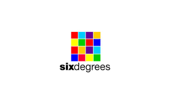

Evolución de las aplicaciones Web
| Hitos |
Hechos |
Imágenes |
Referencias |
| Historia del Internet |
- 1969 ARPANET, la precursora de Internet, se establece con éxito.
- 1971 Se envía el primer correo electrónico.
- 1983 Se introduce el protocolo TCP/IP, un hito crucial en el desarrollo de
Internet.
- 1989 La World Wide Web (WWW) es propuesta por Tim Berners-Lee.
- 1990 El primer motor de búsqueda, Archie, es desarrollado.
- 1995 Netscape lanza su navegador, Netscape Navigator, popularizando la
navegación
web.
|
|
- Rheingold, H. (2000). Tools for Thought: The History and Future of Mind-expanding
Technology. MIT
Press.
- Leiner, B. M., et al. (2017). A Brief History of the Internet. ACM Digital Library.
- Abbate, J. (2000). Inventing the Internet. MIT Press.
|
| Web 1.0 |
- 1989 Timbers Berners Lee propone la WWW
- 1991 Se crea el primer servidor Web en el CERN
- 1991 Se publica el primer sitio Web
- 1993 Se crea el primer navegador Web
- 1994 Se lanza el primer buscador Web
- 1994 Se crea el lenguaje de programacion de Java
|
![imagen 2. Web 2.0]()
|
- Evans, C. (2013). A History of the Internet and the Digital Future. Reaktion Books.
- Gillies, J., & Cailliau, R. (2000). How the Web Was Born: The Story of the World Wide
Web. Oxford
University Press.
|
| Web 2.0 |
- 1997 Sixdegrees: la primera red social
- 2004 Nace Facebook
- 2005 YouTube revoluciona el contenido multimedia
- 2006 Twitter introduce el microblogging
- 2007 iPhone y la web móvil
- 2010 Instagram y el auge de las imágenes
- 2020 TikTok y el entretenimiento social
|


|
- O'Reilly, T., & Battelle, J. (2009). Web Squared: Web 2.0 Five Years On. O'Reilly Media.
- Anderson, P. (2007). What is Web 2.0? Ideas, Technologies and Implications for Education.
JISC.
|
| Web 3.0 |
- 1999 Tim Berners-Lee, inventa la web
- 2001 Se crean RDF para dar significado a la información en la
web.
-
2004 Se lanzan proyectos para aplicar la
web semántica a redes sociales y comunidades online.
-
2011 Se lanza "Linked Data" para publicar datos en la web.
- 2020 La Web Semántica en se emplea en la educación, salud, gobierno, etc.
- 2023 La evolución hacia blockchain. Permite una mayor transparencia de los
datos.
|
|
- Berners-Lee, T. (1999). Weaving the Web: The Original Design and Ultimate Destiny of the World
Wide Web by its Inventor.
HarperCollins.
- World Wide Web Consortium (W3C). (2004). OWL Web Ontology Language Overview. W3C Recommendation.
10 February 2004.
Enlace
- World Wide Web Consortium (W3C). (2020). Semantic Web Use Cases and Applications. W3C Note. 27
February 2020.
|
| Web 4.0 |
-
2020 Inicio de la integración masiva de la IA en las
interfaces de usuario
web.
-
2022 La web 4.0 se caracteriza por la interconexión
total
de dispositivos
IoT, creando una experiencia web omnipresente.
-
2024 Desarrollo de sistemas de realidad aumentada y
virtual
en la web,
ofreciendo experiencias inmersivas.
-
2026 La web 4.0 alcanza la plena autonomía con la
integración de sistemas
de autoaprendizaje y toma de decisiones.
-
2028 Inicio de la era de la web cuántica, con avances
significativos en la
seguridad y el procesamiento de datos.
|
|
- Cobo, C. (2019). Aprendizaje invisible. Octaedro.
- Schwab, K. (2016). The Fourth Industrial Revolution. Crown Business.
|